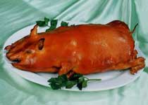

-
黄焖鸡
阳朔黄焖鸡主要选用肉质细嫩紧凑的当地土鸡。土鸡宰杀洗净后，砍成小块，再配以白酒、...
-
猪脚粉
猪脚粉要采用精心挑选的猪前蹄，配以几十种名贵中药材熬制。这样熬熟的猪脚肥而不腻，...
-
梧州蛇宴
蛇宴制作根据不同的蛇品种，可用蒸、焗、煎、炸、炒、熬、煲等不同的烹制方法，配以各...
-
双钱龟苓膏
双钱龟苓膏是历史悠久的梧州传统药膳，相传最初是清宫中专供皇帝食用的名贵药物。它主...
-
艇仔粥
开始时只以新鲜的河虾或鱼片配入熬烂的稀粥中，后来增加了许多配料，如海蜇、花生、腐...
-
田螺鸡煲
田螺鸡煲是一种将田螺与三黄鸡件混和在瓦撑锅内的美食，配以甜笋、生姜、紫苏等料，肉...
-
尼姑素面
相传由桂林月牙山尼姑庵首创，天长日久，制作方法广为流传。桂林尼姑面的精华在于汤，...
-

烤乳猪
乳猪需用糯米或大米味养, 使其肉细皮嫩为上。然后以独特工艺、熟练的火工精心烤制, 使...